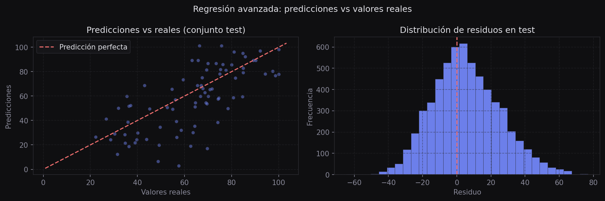
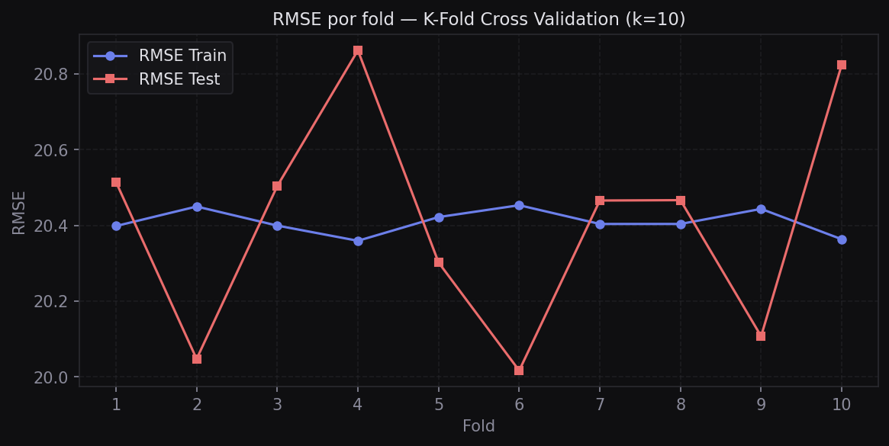

Regresión Avanzada
Extensión del modelo de regresión lineal para incluir variables categóricas mediante one-hot encoding, y evaluación del rendimiento generalizable mediante train/test split y validación cruzada.
Introducción
Los modelos lineales requieren que todas las variables de entrada sean numéricas. Las variables categóricas deben transformarse antes del ajuste. Adicionalmente, la evaluación del modelo sobre los mismos datos de entrenamiento sobreestima el rendimiento real; se requieren técnicas de validación que estimen la capacidad de generalización.
Variables categóricas
One-hot encoding
El one-hot encoding convierte una variable categórica con k categorías en k − 1 columnas binarias (0 o 1). Se elimina una columna para evitar multicolinealidad perfecta (problema conocido como la trampa de las variables dummy).
Por ejemplo, la columna study_method con 5 categorías se convierte en 4 columnas binarias. La categoría omitida es la categoría de referencia:
study_method → group_study | mixed | online_videos | self_study
coaching → 0 | 0 | 0 | 0
group study → 1 | 0 | 0 | 0
mixed → 0 | 1 | 0 | 0
online videos → 0 | 0 | 1 | 0
self-study → 0 | 0 | 0 | 1pd.get_dummies
import pandas as pd
import numpy as np
import statsmodels.api as sm
df = pd.read_csv("data/csvs/examenes.csv")
# Codificar una variable categórica
df_encoded = pd.get_dummies(df, columns=["study_method"],
dtype=int, drop_first=True)
# Verificar las nuevas columnas
print(df_encoded.columns.tolist())# Definir variables predictivas
var_objetivo = "exam_score"
vars_base = ["study_hours"]
# Nombres de las columnas nuevas (drop_first=True elimina la primera)
n_nuevas = len(df["study_method"].unique()) - 1
cols_nuevas = list(df_encoded.columns[-n_nuevas:])
vars_pred = vars_base + cols_nuevas
X = df_encoded[vars_pred]
y = df_encoded[var_objetivo]
print(vars_pred)
# ['study_hours', 'study_method_group study', 'study_method_mixed',
# 'study_method_online videos', 'study_method_self-study']Train / Test Split
Para evaluar el modelo de forma honesta, necesitamos datos que el modelo nunca haya visto durante el entrenamiento. El train/test split divide el dataset en dos partes:
- Train (entrenamiento): el modelo aprende los parámetros con estos datos
- Test (prueba): se evalúa el rendimiento del modelo con datos nuevos
from sklearn.model_selection import train_test_split
from sklearn.metrics import mean_squared_error
X = np.array(X)
y = np.array(y)
X_train, X_test, y_train, y_test = train_test_split(
X, y, test_size=0.3, random_state=1
)
# Entrenar solo con train
model = sm.OLS(y_train, X_train).fit()
# Evaluar en ambos conjuntos
pred_train = model.predict(X_train)
pred_test = model.predict(X_test)
rmse_train = mean_squared_error(y_train, pred_train) ** 0.5
rmse_test = mean_squared_error(y_test, pred_test) ** 0.5
print(f"RMSE Train: {rmse_train:.2f}")
print(f"RMSE Test: {rmse_test:.2f}")
Si el RMSE de train es mucho menor que el de test, el modelo memorizó los datos de entrenamiento (overfitting). Si ambos son altos, el modelo no captura la señal en los datos (underfitting). Un buen modelo tiene RMSEs similares y bajos en ambos conjuntos.
K-Fold Cross Validation
Un solo train/test split puede dar resultados que dependen de cómo se partieron los datos al azar. La validación cruzada K-Fold divide los datos en k partes iguales, entrena el modelo k veces usando k−1 partes para entrenar y 1 para evaluar, y promedia las métricas. Esto da una estimación más robusta del rendimiento real.
from sklearn.model_selection import KFold
kf = KFold(n_splits=10, shuffle=True, random_state=42)
lista_rmse_train = []
lista_rmse_test = []
for train_idx, test_idx in kf.split(X):
X_train, X_test = X[train_idx], X[test_idx]
y_train, y_test = y[train_idx], y[test_idx]
model = sm.OLS(y_train, X_train).fit()
pred_train = model.predict(X_train)
pred_test = model.predict(X_test)
lista_rmse_train.append(mean_squared_error(y_train, pred_train) ** 0.5)
lista_rmse_test.append(mean_squared_error(y_test, pred_test) ** 0.5)
rmse_train_cv = np.array(lista_rmse_train)
rmse_test_cv = np.array(lista_rmse_test)
print(f"RMSE Train CV — Media: {rmse_train_cv.mean():.2f}, Std: {rmse_train_cv.std():.2f}")
print(f"RMSE Test CV — Media: {rmse_test_cv.mean():.2f}, Std: {rmse_test_cv.std():.2f}")
Leave-One-Out Cross Validation (LOOCV)
El LOOCV es el caso extremo de K-Fold donde k = n: cada observación actúa como su propio conjunto de prueba. Es muy preciso pero computacionalmente costoso en datasets grandes.
from sklearn.model_selection import LeaveOneOut
loo = LeaveOneOut()
lista_rmse_loo = []
for train_idx, test_idx in loo.split(X):
X_train, X_test = X[train_idx], X[test_idx]
y_train, y_test = y[train_idx], y[test_idx]
model = sm.OLS(y_train, X_train).fit()
pred = model.predict(X_test)
lista_rmse_loo.append(mean_squared_error(y_test, pred) ** 0.5)
rmse_loo = np.array(lista_rmse_loo)
print(f"RMSE LOOCV — Media: {rmse_loo.mean():.2f}, Std: {rmse_loo.std():.2f}")Comparación de métricas
Resultados obtenidos con el dataset de exámenes (20,000 registros, 5 variables predictivas):
Método RMSE Train RMSE Test
----------------------------------------------
Train/Test (70/30) 20.36 20.52
K-Fold (k=10) 20.41 20.41
LOOCV — 16.01Para la mayoría de los proyectos, K-Fold con k=5 o k=10 ofrece el mejor equilibrio entre precisión y tiempo de cómputo. El LOOCV se reserva para datasets pequeños donde cada dato cuenta. El split simple es útil para una evaluación rápida inicial.
Profundización Resultado del modelo con variables categóricas
Con el encoding de study_method y study_hours, el summary muestra algo interesante:
coef std err t P>|t|
-----------------------------------------------------------------
study_hours 10.13 0.059 171.8 0.000
study_method_group study 20.88 0.452 46.2 0.000
study_method_mixed 23.15 0.455 50.8 0.000
study_method_online videos 18.94 0.452 41.9 0.000
study_method_self-study 18.68 0.446 41.9 0.000Los coeficientes de las variables de método de estudio representan cuántos puntos más obtiene ese método respecto a la categoría de referencia (coaching). Todos son positivos y significativos.